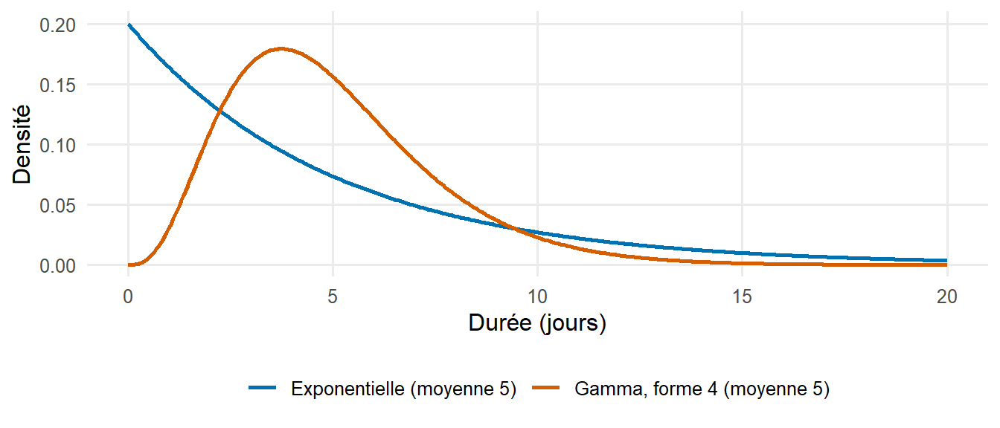
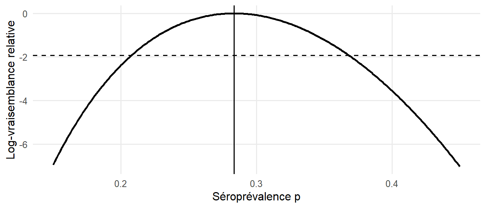

library(tidyverse)P2 Concepts statistiques et épidémiologiques
Apprentissage préliminaire — statistique et épidémiologie
NoteTraduction provisoire
Ce chapitre a été traduit de l’anglais et est en cours de relecture. Les remarques sont les bienvenues.
P2.1 Mesures de fréquence des maladies
| Mesure | Définition | Exemple |
|---|---|---|
| Risque (incidence cumulée) | nombre de nouveaux cas pendant une période ÷ population à risque au début de la période | proportion d’enfants infectés pendant une épidémie de rougeole |
| Taux d’attaque | risque pendant une épidémie (une proportion, malgré son nom) | 512 garçons alités sur 763 : 67 % |
| Taux d’attaque secondaire | nouveaux cas parmi les contacts d’un cas ÷ nombre de contacts | proportion de contacts familiaux infectés |
| Taux d’incidence | nombre de nouveaux cas ÷ personnes-temps à risque | 150 cas de tuberculose pour 100 000 personnes-années |
| Prévalence | nombre de cas existants ÷ population à un moment donné | proportion d’enfants porteurs de parasites du paludisme lors d’une enquête |
| Létalité (case fatality ratio, CFR) | décès parmi les cas ÷ nombre de cas | proportion de cas confirmés de maladie à virus Ebola qui décèdent |
| Létalité par infection (infection fatality ratio, IFR) | décès ÷ nombre d’infections (y compris les infections non détectées) | proportion de l’ensemble des infections par le SARS-CoV-2, estimées par une enquête sérologique, ayant entraîné un décès |
| Taux de mortalité | décès ÷ personnes-temps dans l’ensemble de la population | 45 décès dus au paludisme pour 100 000 personnes-années chez les enfants de moins de cinq ans |
La prévalence, l’incidence et la durée sont liées : dans une situation stable, et lorsque la prévalence est faible,
\[ \text{prévalence} \approx \text{taux d'incidence} \times \text{durée moyenne de la maladie}. \]
Cette relation se retrouve dans les modèles à compartiments, où le nombre d’individus dans un compartiment est égal au flux entrant multiplié par la durée moyenne passée dans ce compartiment.
# Taux d'attaque lors de l'épidémie de grippe de 1978 dans un internat
attack_rate <- 512 / 763
attack_rate## [1] 0.6710354# Prévalence à partir de l'incidence et de la durée : 150 cas pour 100 000 par an,
# durée moyenne de la tuberculose non traitée d'environ 2 ans
150 / 1e5 * 2 * 1e5 # cas prévalents pour 100 000## [1] 300La létalité est une propriété des cas détectés et dépend de la définition de cas et de l’intensité du dépistage : si les cas bénins ne sont pas détectés, la létalité surestime le risque de décès par infection. Pendant une épidémie, la létalité calculée à partir des cas notifiés est également biaisée par le délai entre le début des symptômes et le décès (livre du cours : Severity: the case fatality ratio).
P2.2 Caractéristiques des données de surveillance
Les modèles sont souvent ajustés à des données de surveillance de routine, qui présentent plusieurs caractéristiques dont il faut tenir compte (Centers for Disease Control and Prevention 2012) :
- Les définitions de cas distinguent les cas suspects, probables et confirmés ; une modification de la définition de cas modifie les nombres notifiés.
- Sous-détection : seule une partie des infections entraîne des symptômes, un recours aux soins, un test et une notification. Cette proportion peut évoluer dans le temps, par exemple lorsque la capacité de dépistage augmente.
- Délais de notification : les cas sont notifiés des jours ou des semaines après le début des symptômes, de sorte que les effectifs les plus récents sont incomplets (livre du cours : Reporting delays and nowcasting).
- Type de date : date d’infection, de début des symptômes, de consultation, de prélèvement, de confirmation au laboratoire ou de notification. Chaque date implique un délai différent par rapport à l’infection.
- Agrégation : les systèmes de surveillance intégrée des maladies et riposte (SIMR) et DHIS2 rapportent généralement des effectifs hebdomadaires par district ; les listes linéaires comportent une ligne par cas.
La courbe épidémique — le nombre de cas par date de début des symptômes — est la description de base d’une épidémie et la principale donnée d’entrée des modèles de transmission. L’épidémiologie descriptive selon le temps, le lieu et les personnes est traitée en détail par Centers for Disease Control and Prevention (2012), leçons 1 et 4 à 6.
P2.3 Lois de probabilité
Les lois de probabilité décrivent la variabilité des effectifs et des durées. Les suivantes sont utilisées tout au long du cours :
| Loi | Type | Moyenne | Variance | Utilisation courante en modélisation |
|---|---|---|---|---|
| Binomiale(\(n\), \(p\)) | effectifs de 0 à \(n\) | \(np\) | \(np(1-p)\) | nombre d’infectés parmi \(n\) contacts ; nombre de séropositifs dans une enquête |
| Poisson(\(\lambda\)) | effectifs ≥ 0 | \(\lambda\) | \(\lambda\) | nombre de cas par jour ou par semaine |
| Binomiale négative(\(\mu\), \(k\)) | effectifs ≥ 0 | \(\mu\) | \(\mu + \mu^2/k\) | effectifs surdispersés ; nombre de cas secondaires (super-propagation) |
| Exponentielle(taux \(r\)) | durées > 0 | \(1/r\) | \(1/r^2\) | durée passée dans un compartiment d’un modèle d’EDO |
| Gamma(forme \(a\), taux \(b\)) | durées > 0 | \(a/b\) | \(a/b^2\) | période d’incubation, intervalles sériel et de génération, délais de notification |
| Log-normale(\(\mu\), \(\sigma\)) | durées > 0 | \(e^{\mu + \sigma^2/2}\) | \((e^{\sigma^2} - 1)\, e^{2\mu + \sigma^2}\) | période d’incubation |
| Normale(\(\mu\), \(\sigma\)) | continue | \(\mu\) | \(\sigma^2\) | approximations ; lois a priori |
| Bêta(\(a\), \(b\)) | proportions dans (0, 1) | \(\dfrac{a}{a+b}\) | \(\dfrac{ab}{(a+b)^2(a+b+1)}\) | lois a priori pour des proportions |
Dans R, chaque loi dispose de quatre fonctions : d... (probabilité ou densité), p... (fonction de répartition), q... (fonction quantile) et r... (tirages aléatoires), par ex. dpois(), ppois(), qpois(), rpois().
dbinom(3, size = 20, prob = 0.1) # P(3 contacts infectés sur 20)## [1] 0.1901199ppois(10, lambda = 6) # P(au plus 10 cas dans une semaine de moyenne 6)## [1] 0.9573791qgamma(0.95, shape = 4, rate = 0.4) # 95e centile d'un délai gamma de moyenne 10 jours## [1] 19.38414pexp(5, rate = 1 / 5) # P(quitter un compartiment avant sa durée moyenne)## [1] 0.6321206Le dernier résultat montre une propriété importante des modèles à compartiments fondés sur des équations différentielles ordinaires : la durée passée dans un compartiment suit une loi exponentielle, de sorte que 63 % des individus quittent le compartiment avant sa durée moyenne et qu’une part importante y reste beaucoup plus longtemps. Les distributions réelles des délais sont généralement moins dispersées et sont mieux décrites par une loi gamma ou log-normale (Figure 1).

La loi binomiale négative comporte un paramètre de dispersion \(k\) ; lorsque \(k\) augmente, elle se rapproche de la loi de Poisson. De petites valeurs de \(k\) correspondent à des effectifs plus variables que ne le prévoit un modèle de Poisson (surdispersion), ce qui est fréquent dans les données de surveillance et dans le nombre de cas secondaires par cas (livre du cours : Stochastic models).
P2.4 Estimation et intervalles de confiance
Une statistique d’échantillon, telle qu’une proportion, estime une valeur inconnue de la population avec une erreur d’échantillonnage. Un intervalle de confiance à 95 % est construit de telle sorte que, sur des échantillons répétés, 95 % de ces intervalles contiendraient la vraie valeur.
# Séroprévalence : 34 positifs sur 120 testés (intervalle de confiance binomial exact)
binom.test(34, 120)$conf.int## [1] 0.2048557 0.3728205
## attr(,"conf.level")
## [1] 0.95# Taux d'incidence : 45 cas pour 30 000 personnes-années (intervalle de confiance de Poisson exact)
poisson.test(45, T = 30000)$conf.int * 1e5 # pour 100 000 personnes-années## [1] 109.4110 200.7118
## attr(,"conf.level")
## [1] 0.95Les intervalles de confiance ne reflètent que l’erreur d’échantillonnage aléatoire ; ils ne tiennent pas compte des erreurs systématiques telles que le biais de sélection, les erreurs de classement ou la sous-détection.
P2.5 Vraisemblance
La vraisemblance exprime la probabilité des données observées pour une valeur donnée d’un paramètre. Pour 34 positifs sur 120 testés, la vraisemblance d’une séroprévalence \(p\) est la probabilité binomiale \(L(p) = \binom{120}{34} p^{34} (1-p)^{86}\). L’estimateur du maximum de vraisemblance (EMV) est la valeur de \(p\) qui maximise \(L(p)\) ; ici, il est égal à la proportion observée \(34/120\). En pratique, on utilise le logarithme de la vraisemblance, plus commode numériquement.
log_lik <- function(p) dbinom(34, size = 120, prob = p, log = TRUE)
mle <- optimize(log_lik, interval = c(0.001, 0.999), maximum = TRUE)$maximum
c(mle = mle, observed = 34 / 120)## mle observed
## 0.2833345 0.2833333
Le même principe sert à estimer les paramètres des modèles de transmission : le modèle prédit le nombre attendu de cas, et l’on retient les paramètres qui maximisent la vraisemblance des effectifs observés (livre du cours : Linking models to data). Les valeurs du paramètre pour lesquelles la log-vraisemblance se situe à moins de 1,92 unité de son maximum forment un intervalle de confiance approché à 95 % (Figure 2). En inférence bayésienne, la vraisemblance est combinée à une loi a priori (livre du cours : Bayesian model fitting).
P2.6 Modèles de régression pour des données de comptage
La régression de Poisson modélise le logarithme de l’effectif attendu comme une fonction linéaire de variables explicatives. Un terme de décalage (offset) égal au logarithme de la population (ou des personnes-temps) transforme les effectifs en taux ; les coefficients exponentiés sont des rapports de taux.
set.seed(1)
districts <- tibble(
district = paste("District", 1:12),
population = round(runif(12, 50000, 300000)),
coverage = round(runif(12, 0.5, 0.95), 2) # couverture vaccinale
) |>
mutate(cases = rpois(12, lambda = population * 2e-4 * exp(-3 * (coverage - 0.7))))
fit <- glm(cases ~ coverage + offset(log(population)), family = poisson, data = districts)
summary(fit)$coefficients## Estimate Std. Error z value Pr(>|z|)
## (Intercept) -6.566844 0.3575204 -18.367747 2.380913e-75
## coverage -2.773596 0.4703854 -5.896434 3.714418e-09exp(coef(fit)[["coverage"]] * 0.1) # rapport de taux pour une hausse de 10 points de couverture## [1] 0.7577819La régression de Poisson sur le temps sert aussi à estimer le taux de croissance d’une épidémie à partir des premiers effectifs de cas (livre du cours : Estimation of the reproduction number from the growth rate). Lorsque les effectifs sont surdispersés, les erreurs types d’un modèle de Poisson sont trop petites ; il convient alors d’utiliser un modèle de quasi-Poisson (family = quasipoisson) ou binomial négatif (MASS::glm.nb()).
NoteSolution
binom.test(240, 80000)$conf.int * 1000 # taux d'attaque pour 1 000## [1] 2.632897 3.403844
## attr(,"conf.level")
## [1] 0.95binom.test(6, 240)$conf.int # létalité## [1] 0.009228601 0.053617475
## attr(,"conf.level")
## [1] 0.95c(negbin = var(rnbinom(1000, mu = 10, size = 2)), poisson = var(rpois(1000, 10)))## negbin poisson
## 61.016792 9.199243shape <- 9^2 / 5^2; rate <- 9 / 5^2
c(shape = shape, rate = rate, p_over_21 = 1 - pgamma(21, shape, rate))## shape rate p_over_21
## 3.24000000 0.36000000 0.02580851P2.7 Auto-évaluation
P2.8 Ressources complémentaires
- Centers for Disease Control and Prevention (2012) : Principles of Epidemiology in Public Health Practice, cours gratuit d’auto-apprentissage des Centers for Disease Control and Prevention des États-Unis (en anglais ; les leçons 1 à 3 et 5 sont particulièrement pertinentes).
- Giesecke (2017) : Modern Infectious Disease Epidemiology — une introduction à l’épidémiologie des maladies infectieuses, y compris l’investigation des épidémies et les notions de base sur la transmission.
- Rothman (2012) : Epidemiology: An Introduction — mesures de fréquence des maladies et d’effet.
- Kirkwood et Sterne (2003) : Essential Medical Statistics — intervalles de confiance, taux, régression de Poisson et vraisemblance (chapitres sur les taux et sur la vraisemblance).
- Diez et al. (2019) : OpenIntro Statistics — un manuel gratuit d’introduction à la statistique (https://www.openintro.org/book/os/).
- Pawitan (2001) : In All Likelihood — un exposé avancé de l’inférence fondée sur la vraisemblance.
- PATH/MACEPA, Foundational Epidemiology Knowledge (https://path-global-health.github.io/df-foundational-epi-skills/, en anglais) — un bref rappel sur les mesures de fréquence et d’association, les types d’études, les mesures de détection des maladies, la standardisation et la confusion, avec un quiz et des séries d’exercices.